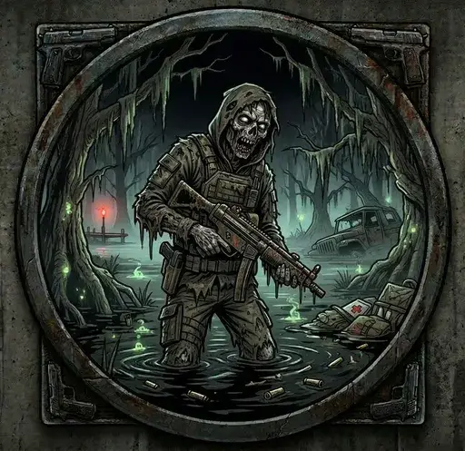

Roaming Zombies
- Downloads
- 7,625
- Favourites
- 29
- Mod lists
- 44
Roaming Zombies
Turn every raid into survival horror. Mixed hordes of infected spawn on every map, any time of day — melee zombies hunt you down and swing knives, pistol zombies shoot from cover. One horde per raid. You get a notification, then they come.
“The dead are rising… zombies have been spotted nearby.”
⚠️ Read this before installing
Zombies are genuinely dangerous. This isn’t cosmetic — a horde on Labs or night Factory can absolutely wipe you. Melee zombies chain knife attacks at 1-second intervals, pistol zombies engage from 15 meters with real aim, and EFT’s infection contact damage stacks on top when they get close. Bring ammo, watch your six, and don’t get cornered.
What you get
- Mixed hordes on every map — melee + pistol zombies drawn from all four infected types (
infectedAssault,infectedPmc,infectedCivil,infectedLaborant) - Real knife swings with native animations and damage — armor reduction works correctly because hits go through EFT’s standard
KnifeColliderpipeline - Active pursuit — melee zombies pathfind toward the closest human player and face you before each swing
- Pistol zombies engage from range using EFT’s standard shoot AI
- HUD notification + alert sound when the horde arrives
- Any time of day — no more night-only restriction, zombies come whenever you’re in a raid
- Persists across raids — no re-enabling needed
Platform & mod compatibility
- ✅ Solo SPT — plug and play
- ✅ Fika host — host drives AI for all players in session
- ✅ Fika headless — install client DLL on the headless, zombies hunt every connected player
- ✅ Acid’s Bot Placement System (ABPS) — horde re-injected after ABPS’s post-raid wipe, both mods coexist cleanly
- ✅ SAIN — SAIN explicitly excludes infected bot types from its overrides, so they don’t fight
No mod dependencies. No BigBrain, no MoreBotsAPI. Self-contained.
Installation
- Download the latest release ZIP
- Extract into your SPT root folder — files drop into the correct locations automatically:
BepInEx/plugins/ZombieHorde/ZombieHorde.Client.dllSPT/user/mods/ZombieHorde/ZombieHorde.Server.dll+config.json
- Restart SPT Server and launch the game
Fika-specific: install the client DLL on whichever machine drives bot AI — that’s the host in a host/client session, or the headless in a headless session. Player-only machines can still install it for the horde notification + alert sound.
Configuration
Edit SPT/user/mods/ZombieHorde/config.json to tune:
- Per-map spawn chance (0–100%) — default tuned from 30% on huge maps like Woods up to 100% on Labs and night Factory
- Horde size — default 8–16 melee zombies + 4–8 pistol zombies per raid
- Spawn delay — default 120 seconds so you can load in before they arrive
alwaysSpawn: true— “100% on every map” override if you want guaranteed hordes everywhere
Optional: custom alert sound
Drop horde_alert.ogg (or .wav) into BepInEx/plugins/ZombieHorde/ and it’ll play when the first zombie of the horde is detected.
F12 settings panel
If you have BepInEx ConfigurationManager, press F12 in-raid to toggle the horde notification and alert audio live.
Requirements
| Requirement | Version |
|---|---|
| SPT | ~4.0.13 |
| BepInEx ConfigurationManager | optional (for F12 panel) |
Thanks to the SPT modding community for dnSpy help, SAIN for making the compat research straightforward, and BSG for leaving just enough of the Halloween event wiring in place to hack together..
Version
1.2.0
The one that makes zombies threatening - No more Bluetooth damage through walls
Previous versions of Roaming Zombies had infected bots that shambled around harmlessly — a bizarre touch-damage effect was the only way they could hurt you. v1.2.0 is a different mod. Melee zombies now actively hunt you, face you before each swing, and chain knife attacks. Pistol zombies engage from range with a Makarov using EFT’s standard shoot AI. Both vectors do real damage through EFT’s native pipeline, so armor class reduction works correctly.
⚠️ I cannot stress this enough — zombies are a real challenge now. A horde on Labs or night Factory will wipe you if you’re not paying attention.
What’s new
Melee zombies
- Real knife swing animations — proper animation, proper hit-cast, proper damage
- Active pursuit — zombies pathfind toward the closest human player and face you before each swing so the hit actually lands
- 1-second swing cadence — they’ll chain attacks if you don’t move
- Native damage — so armor class reduction works naturally (old reflection hack that bypassed armor is gone)
Pistol zombies (new)
- Spawn as a secondary horde
- Engage you from 15 m with a Makarov, using EFT’s standard shoot AI
- Configurable via new
pistolHordeSizeconfig (default 1-2 per infected type)
Platform support
- Fika headless works end-to-end. Zombies hunt and attack the closest human player even when there’s no local player on the machine running bot AI. Just install the client DLL on the headless too.
- ABPS coexistence confirmed. The router re-injects zombies after ABPS’s post-raid wipe runs.
- SAIN coexistence confirmed. SAIN’s own
StrictExclusionListkeeps it out of our zombies’ brains.
Fika users: the client DLL must be on whichever machine drives bot AI. For Fika headless sessions, that’s the headless — put the client DLL in <headless>/BepInEx/plugins/ZombieHorde/. Player machines can have it too for local notifications + audio.
Version
1.1.1
v1.1.1 — ABPS Persistence & Fika Headless Fixes
Two long-standing compatibility issues fixed this release.
ABPS (Acid’s Bot Placement System) persistence
Fika headless spawn fix
Other improvements
- F12 settings panel — with BepInEx ConfigurationManager, press F12 to live-tune melee damage, range, cooldown, and notification toggles without leaving a raid
spawnChanceis a real percentage — server-side dice roll.30actually means ~30% of raids (was coerced to 100% by EFT internals)alwaysSpawnconfig option — bypasses dice rolls + bot caps, forces a horde every raid- Default
spawnDelaySeconds30 → 120 so players load in before the horde - Melee damage 35 → 5, range 4m → 2m
Compatibility
SPT ~4.0.13 · Fika solo/host/headless · ABPS compatible · Optional BepInEx ConfigurationManager for F12 UI
Known limitation
Zombies don’t play attack animations — EFT’s Halloween event system is dead code in this build. Damage is applied via proximity reflection.
Version
1.0.0
Roaming Zombies
When the sun goes down, the dead come out.
Roaming Zombies adds infected hordes to every map in SPT. Night raids are no longer safe — a mixed pack of zombie scavs, PMCs, civilians, and laborants will spawn and hunt you down. You’ll get one warning.
Features
- 🧟 Mixed horde of infected scavs, PMCs, civilians & laborants
- 🌙 Night raids only (22:00 – 06:00 in-game time)
- ⏱️ One horde per raid, spawns on a configurable timer
- 🔔 HUD alert when the horde is detected
- 🔊 Optional custom alert sound — drop your own
.oggor.wav - 🤝 Fika co-op compatible
Configuration
All settings are in SPT/user/mods/ZombieHorde/config.json
- Horde size — min/max bots spawned per zombie type
- Spawn delay — seconds after raid start before the horde arrives
- Spawn chance — per-map percentage, set to
0to disable a map entirely
Fika
| Server mod | Install on SPT server as normal |
| Client mod | All players install for the full experience (alert + sound). Zombies spawn regardless. |
Requirements
| SPT | ~4.0.13 |